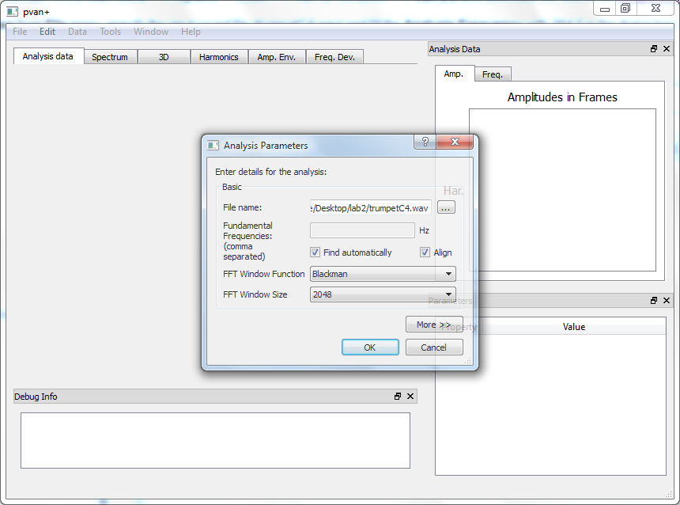
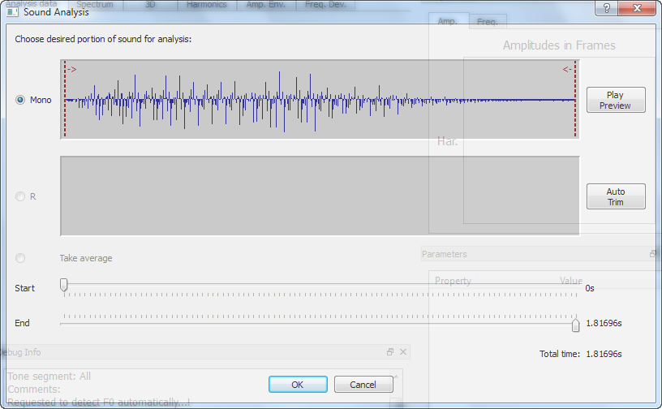
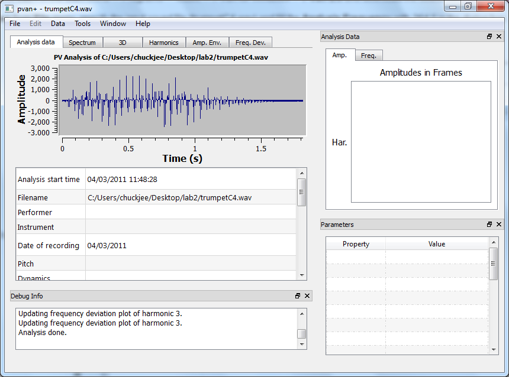
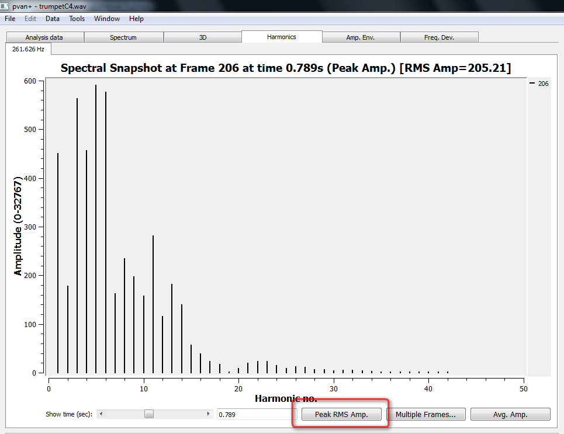
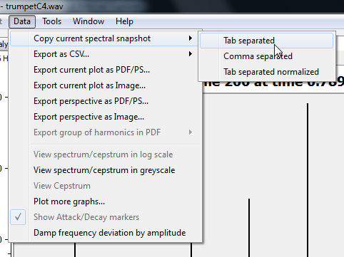
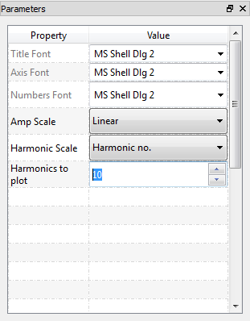
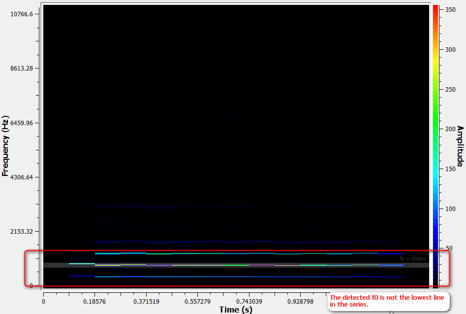

COMP 4441 Computer Music
Lab 2: Sound Analysis
What to do ?
In this lab, you will analyze sound files to find the harmonics and
synthesize them using additive synthesis. The first instrument tone to synthesis
is a C4 trumpet tone.
PVan Spectrum Analysis
Run pvan+. Download the sound file
trumpetC4.wav for analysis.
- Choose to analyze a sound file. Locate and open the input sound file (trumpetC4.wav).
- By default, pvan+ will automatically detect the fundamental frequency, and align it to the nearest pitch frequency. You may later adjust these parameters for other advanced usage.

- You can choose the portion of the sound to be analyzed. For this lab, you can use the default values and analyze the whole sound.


- Choose the Harmonics tab, click on the button Peak RMS Amp. to see the time frame where the RMS amplitude is highest. You may need to maximize the window to see the button.

- You should see the plot of Harmonic numbers against Amplitude. Record the
amplitudes for every harmonics by choosing Data -> Copy current spectral snapshot -> Tab separated (You do not need to copy manually from the Debug Info box!). You can paste
the data (amplitudes) to Notepad or other text editor.

- Synthesize the sound using Csound with the first 10 harmonics using additive
synthesis, the technique you learnt from Lab 1. The result should sound similar
to the original sound.
- Where can you find the fundamental frequency?
- The sample codes from Lab 1:
sinewave.orc and sinewave.sco.
Points to note
- You may adjust the parameters to change the outlook of the graphs for better visualization.

- Since pvan+ is still a software under development, it may sometimes give wrong guesses or becomes unstable. For example, if you see in the ""Spectrum" tab that it has detected a wrong fundamental frequency, you may try to input the value yourself.

Lab Assignment
Synthesize this voice sound using additive synthesis
with the first 10 harmonics.
Hints:
- Analyze the harmonics to obtain the amplitudes of each of the harmonics.
- The sample codes from Lab 1: sinewave.orc and
sinewave.sco.
CASS - Course Assignment Submission
System
If you have finished your assignment and
demonstrated to your TAs, you don't need to submit your files to CASS. But if you don't attend the labs or you
cannot finish the assignment in the lab, you need to submit the source
code using the
CASS.
Demonstration and Submission
Please submit your files
"additive.orc" and "additive.sco" using
CASS before Monday (29-Sep-2014). For any questions, please contact
your TAs by email (*Only for question asking. Submissions please go to CASS.* ronmo@cse.ust.hk, bwuaa@cse.ust.hk).
DO NOT submit the wav file; submitting the orc and sco
files will be enough. Thank you.